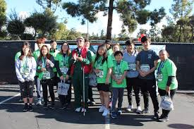

Joon Choi
Joon Choi attended Van Nuys High School before eventually graduating to the University of California Riverside in 2020. He is currently majoring in Pre Business, a prerequisite before eventually transferring to the school of Business Administration. Some of Joon's hobbies include playing video games and playing tennis. Joon was a member of Van Nuys High School's varsity tennis team for all his four years of attendance. He is also multilingual, having the ability to speakk both moderate Spanish and Korean aside from English. His favorite subjects in school tend to be more humanities related, such as physchology and anthropology. After graduating from college, he hopes to someday help his father run a taping and plastic wrap company that exports to large wholesalers and many more. Joons favorite foods are steak and chicken. He prefers these foods because of the sheer variety of meals that can be made from just those two types of proteins. However, his least favorite foods are celery and cilantro, both of which leave a bitter aftertaste in your mouth long after consumption. Some of Joons favorite sports to watch are Formula 1 and basketball. Joon has been an avid motorsport lover since an early age, and is also interested in automobiles in general. His dream car is a Nissan GT-R or a Porsche 911 GT3. Joon is currently studying remotely at home as of now due to the ongoing pandemic, but he hopes to attend campus as soon as possible as an excited freshman. The types of people Joon dislikes the most are those who tend to be extremely pretentious. For example, there was a studenet in Joons high school class who would often interrupt others when they were talking to assert his point of view that often had no correlation to the subject in discussion. This was an attempt for his classmate to project himself as someone who is well educated in matters he was unfamiliar with. This greatly irked Joon as he did not understand why someone would go to such measures to display false signs of intelligence. Joon also hates people who tend to be two faced and act differently depending on the type of group they are haning out in. Inconsistency in personalities is a sign that someone is insecure about themselves or they may create fake personalities in order to gain the attention and help of other people by exploiting them. When I finally graduate college and settle downn with a nice job, I want to buy a nice and cozy house in a quiet neighborhood that has a lot of trees and is peaceful. It would be pretty difficult though considering I would need to buy home insurance and all the other hassles included in home ownership. If possible, I would also like to buy my parents a hoome with personal caretakers so they can be comfortabl
Experience
Volunteer
• Volunteer at Salvation Army Summer Day Camp
• Helped teach under-privileged children math and english
• Served as a helper for multiple field trips
Speaker
• Participated in current world debates
• Helped organize club meetings and activities
Co-President
• Organized drives to help underprivileged Latin Americans
• Participated in marathons to raise awareness
• Set up activities for children that are bed-bound
• Held recycling funrdaisers to encourage members to raise funds
Education
Van Nuys High School
University of California Riverside
Portfolio

.jpeg)